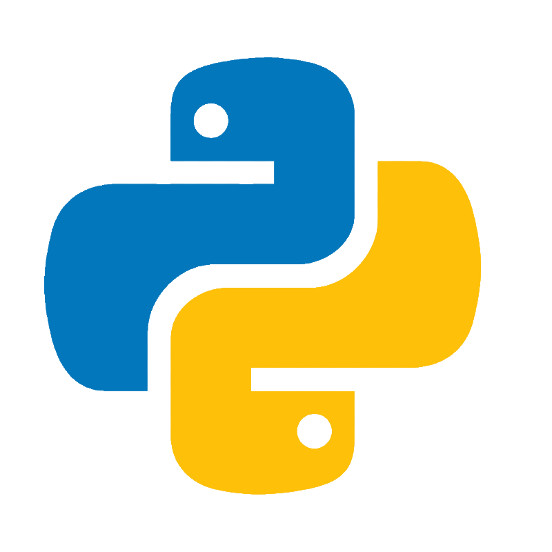
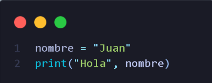

Hola, bienvenidos a mi primera página, en la cual voy a explicar conceptos básicos para que puedan comenzar a programar con Python.
Quiero aclarar que no soy ningún tipo de experto; simplemente deseo compartir los conocimientos que he adquirido sobre este maravilloso lenguaje.
Si en algún momento tienen dudas, son libres de investigar en otras fuentes. Aun así, agradecería mucho que dejaran sus comentarios en la caja de sugerencias que se encuentra al final de la página. Esto me permitirá mejorar el contenido y brindar una mejor ayuda a quienes están empezando en el mundo de la programación.
Muy bien criaturitas del señor, vamos a empezar.

Primero que nada, vamos a comprender qué es Python. Se trata de uno de los lenguajes de programación más fáciles de aprender y entender, especialmente para quienes están comenzando.
Python es un lenguaje interpretado y de alto nivel, lo que significa que su sintaxis es clara y cercana al lenguaje humano, y no necesita ser compilado antes de ejecutarse.
Fue diseñado para ser ejecutado en múltiples plataformas, lo que lo hace muy versátil. Además, cuenta con una gran variedad de aplicaciones en distintos campos, desde el desarrollo de páginas web con frameworks como Django, hasta áreas como la inteligencia artificial y el análisis de datos.
Todo esto convierte a Python en uno de los lenguajes más populares entre los principiantes, gracias a su facilidad de aprendizaje y a su amplia comunidad.

Este es un claro ejemplo del porque python es un lenguaje super sencillo